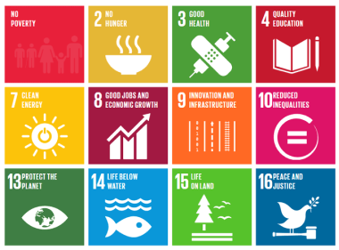

In this project, we're going to look at some of the biggest problems in the world and create a Scratch game that could help raise awareness or tackle this challenge. Here is an example project:
1) Click on the image below to read about the UN Sustainable Development Goals and choose one you are passionate about. Another option is to choose a problem that is more local to your community.
2) Once you have selected your goal, it's research time! Use the UN.org, Google, and Wikipedia to gather 10 facts or more about this global issue.
3) Now, let's view a few more examples of tech that is changing the world.
UN Goal: No Poverty
Free Rice: A game that when you select the correct vocab definition donates rice in real life to the charity of your choice.

UN Goal: Climate Action
Tree Planet 2: When you raise your tree in the game, they plant a tree in the real forest! In the past 3 years, they have planted 240,000 real trees.
4) Think back to your goal. What kind of game can you create to raise awareness or help tackle this problem?